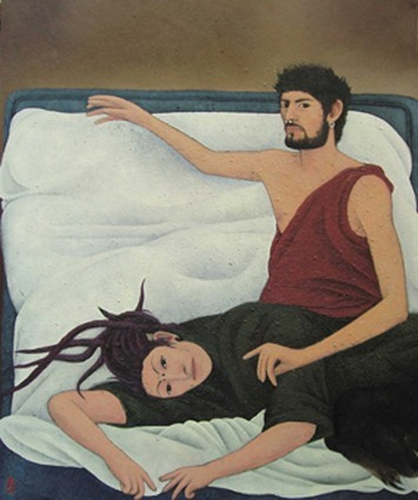

Lospunks

L'arte contemporanea è uno degli specchi in cui viviamo e come tutti gli specchi riflette anche quello che preferirermmo non vedere. Lo sa bene Andrea Lucchesi, alla sua prima personale alla galleria Blob Art (curata da Emma Gravagnuolo), che manifestando una ferma resistenza a dogmi estetici, a categorie artistiche prestabilitee a tutta quella vasta gamma di soggeti alla moda, sceglie frammenti di quotidianità che osserva, cattura, interiorizza dipingendo immagini di un mondo anticonvenzionale , scomodo e ribelle; un mondo che tiene ben saldo al centro l'uomo, le sue contraddizioni, il suo habitat. La mostra, composta da otto grandi tele dipinte ad olio e dieci grafite su carta, registra l'umanità silenziosa che circonda l'autore, un'umanità eterogenea conosciuta attraverso la lunga frequentazione di un centro sociale vicino Firenze. E' qui che entra in contatto con tutti quegli antieroi che costituiscono il sottofondo delle nostre grandi e distratte città. Lucchesi li ritrae rigorosamente dal vero, in studio (quello studio che fu di Tito Conti e che vincendo il prestigioso premio Tito e Maria Conti conferito dall'Accademia delle Arti del Disegno di Firenze, ha in uso per cinque anni) materializzando nelle opere la loro condizione incerta, interpretando il contesto urbano come palcoscenico sul quale si svolge questa loro infinita lotta.